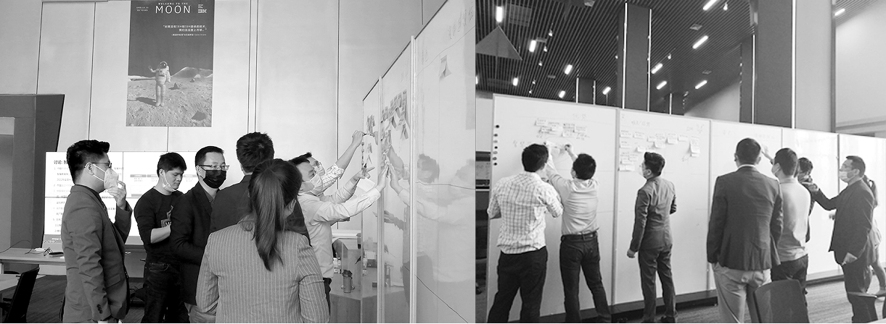
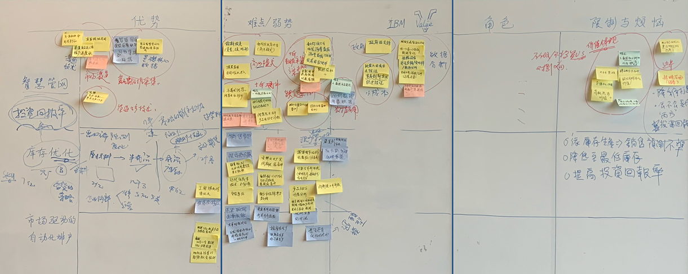
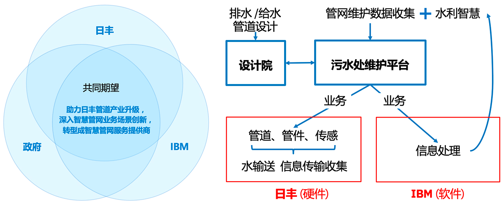
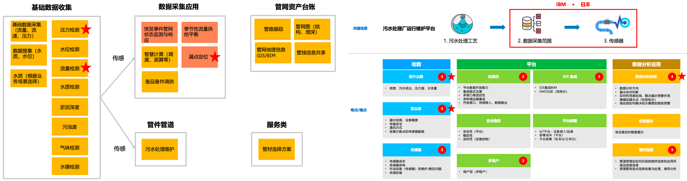
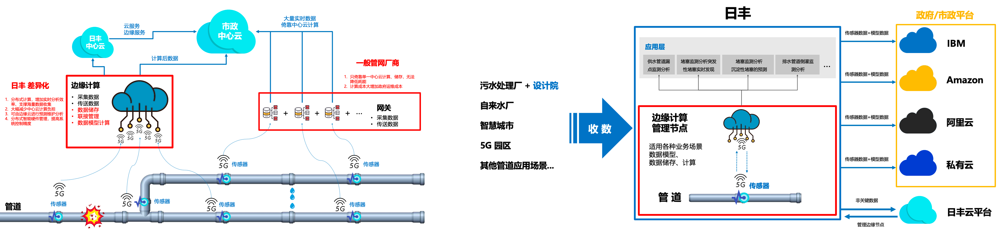
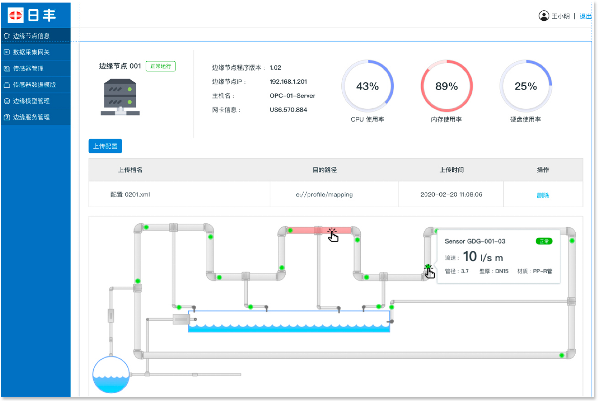
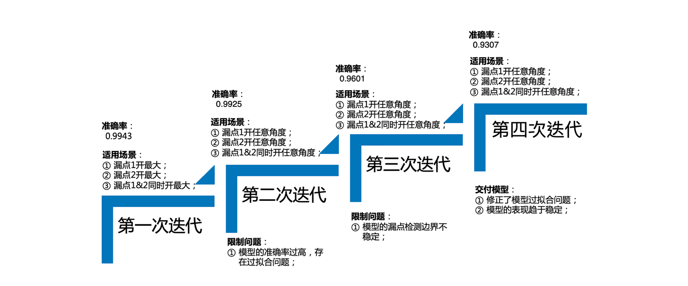

RiFeng Enterprise Group:
AI-Edge Powered Water Network
Developing an intelligent water supply platform for RiFeng to lead the Smart City market. We leveraged 5G, Edge Computing, and DNN models to achieve 93% accuracy in leak detection and real-time network visualization.
My Role
Facilitator, UX/UI Design (Edge Platform), Functional Definition
Project Scope
IoT & 5G Integration, Edge AI Model, Smart City Management Dashboard
Strategy Discovery: Smart Supply
Through the IBM Garage workshop, RiFeng identified "Smart Water Supply" as the key strategic opportunity. We focused on solving the critical pain point of underground water leakage using data-driven positioning.

From As-Is to AI Solution
Mapping the existing scenario revealed that traditional leak detection was manual and reactive. Our solution introduced a Deep Learning (DNN) model integrated into edge nodes for proactive warning.


Transitioning from a reactive maintenance model to an automated, AI-driven leak detection system.
Edge Computing Architecture
The system utilizes 5G sensors to transmit data to edge servers, where deep learning models perform localized computation before syncing with the cloud. This reduces latency and improves detection precision.

DNN right-sizing and model partitioning ensure high-performance computation at the edge.
Functional Architecture & MVP Scope
We defined a robust three-tier architecture to support real-time data processing and AI-driven leak detection, ensuring the MVP focuses on the highest-value features.

From 5G sensor data acquisition to edge-based DNN processing and final cloud visualization.
Phase 1: Data Connectivity
Deploying 5G sensors to collect pipe pressure and flow data across the network grid.
Phase 2: Edge-AI Integration
Partitioning the DNN model into edge nodes to perform localized analysis and reduce emergency response time.
Phase 3: Visualization Platform
Launching the central dashboard for real-time monitoring and historical data analytics for the entire Smart City network.
Management Platform & Model Iteration
The solution combines a high-level visualization dashboard with a self-learning DNN model. While the dashboard provides real-time alerts, the backend model undergoes continuous iteration to handle complex real-world leak scenarios.

Real-time node status monitoring and precise leak location mapping based on edge-processed data.

Our DNN model underwent three major iterations to ensure reliability:
• Phase 1: Initial training achieved 96.01% accuracy in controlled single-leak environments.
• Phase 2: Expanded to multi-point leak scenarios (Leak A & B at various angles).
• Final Stage: Achieving a stable 93.07% accuracy across generalized urban pipe network patterns, balancing precision with computational efficiency at the edge.